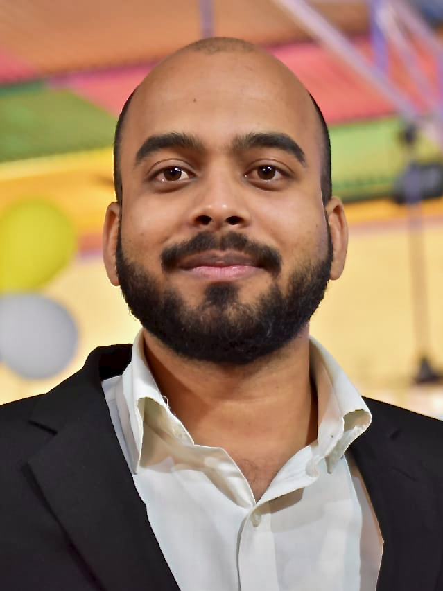
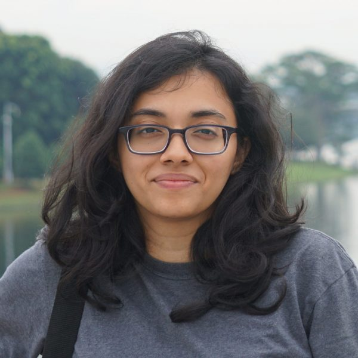
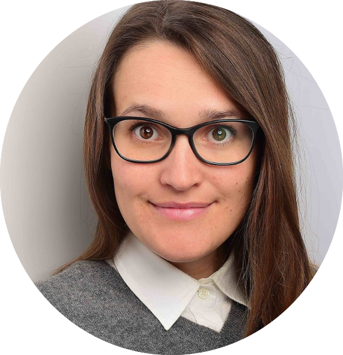
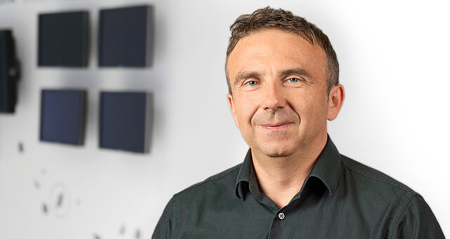
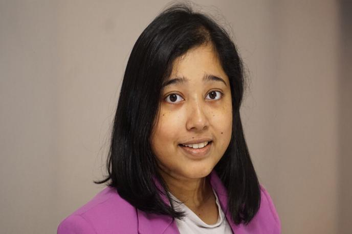

Shubham Kumar Nigam
University of Birmingham, Dubai
Personal website ↗s.k.nigam@bham.ac.uk ↗Researchers working across language technologies, explainability, and trustworthy AI.

University of Birmingham, Dubai
Personal website ↗s.k.nigam@bham.ac.uk ↗
University of Aberdeen, UK
Research profile ↗a.sivaprasad.22@abdn.ac.uk ↗
Johannes Gutenberg University Mainz · TU Berlin
Personal website ↗vera.schmitt@uni-mainz.de ↗
Fraunhofer HHI · TU Berlin
Personal website ↗wojciech.samek@hhi.fraunhofer.de ↗
University of Liverpool, UK
University profile ↗procheta.sen@liverpool.ac.uk ↗Programme committee members will be listed once their participation is confirmed.